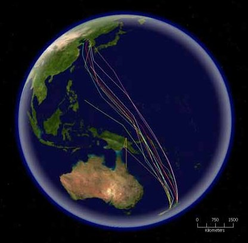
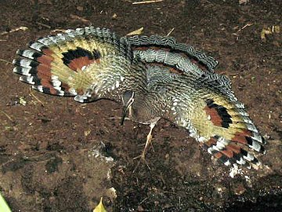
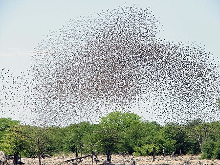

Úvod
Ptáci (Aves) jsou třída teplokrevných obratlovců, pro kterou je charakteristická přítomnost peří, bezzubého zobáku, snášení skořápkových vajec, vysoká rychlost metabolismu, čtyřdílné srdce a pevná lehká kostra s častými srůsty kostí. Přední končetiny jsou přeměny v křídla (jedinou známou výjimku představují epyornisovití a moa). Celkem je dnes známo asi 10 400 druhů žijících ptáků (z toho přes 4083 druhů nepěvců a 5895 druhů pěvců) a přes 2000 druhů fosilních. Je ale možné, že skutečná biodiverzita současného ptactva je ještě mnohem vyšší a čítá asi 11 000 až 18 000 druhů. Odhaduje se, že na Zemi žije přibližně 50 miliard jedinců ptáků.
Jedná se o jedinou přežívající a přitom vysoce specializovanou skupinu teropodních dinosaurů (maniraptorů), která jako jediná přežila hromadné vymírání na konci křídy před 66 miliony let. Věda zabývající se touto skupinou živočichů se nazývá ornitologie. Vyhynulými druhy ptáků pak paleontologie či (přesněji) paleozoologie.
> Evoluce
Ptáci jsou vývojoví potomci drobných teropodních dinosaurů, konkrétně maniraptorů (klad Pennaraptora a Avialae), z nichž se vyvinuli v období střední až svrchní jury, před více než 160 miliony let. Dinosaury jako předky ptáků označil již německý anatom Carl Gegenbaur v roce 1863 a jedná se tedy o nejstarší přesně zformulovanou hypotézu o původu ptáků. O několik let později postuloval anatomickou podobnost teropodních dinosaurů a ptáků také britský přírodovědec Thomas Henry Huxley. V posledních čtyřiceti letech je díky výzkumům Johna Ostroma respektována naprostou většinou paleontologů a mnoha ornitology.
Nejbližšími žijícími příbuznými ptáků jsou krokodýli – společně představují jediné žijící zástupce kladu Archosauria.
> Anatomie
Ve srovnání s ostatními obratlovci mají ptáci uspořádání těla vykazující mnoho neobvyklých přizpůsobení, většinou k usnadnění letu.
Kostra je složena z velmi lehkých kostí. Kosti jsou duté a vyplněné vzduchem, přičemž dutiny jsou spojeny s dýchacím ústrojím. Tyto duté kosti jsou přitom velmi pevné. Lebeční kosti jsou spojené a bez zřetelných švů. Očnice jsou mohutné a oddělené kostní přepážkou. Páteř je rozdělena na krční, hrudní, křížový a ocasní oddíl s ohebnými krčními obratli, jejichž počet je vysoce proměnlivý. Pohyb je omezen u obratlů počínaje posledními hrudními obratli a není možný u dalších obratlů. Kost kyčelní je srostlá po celé délce s páteří. Žebra jsou zploštěná a jsou upnuta k mohutné deskovité prsní kosti, k níž jsou připojeny létací svaly. Pouze nelétaví ptáci mají prsní kost poměrně malou a bez hřebene. Přední končetiny jsou přeměněny v křídla. Výzkum ukázal, že ptačí „šupiny“ na nohách nemají stejný evoluční základ jako plazí šupiny a vznikly spíše jako morfologické odvozeniny od peří.
Podobně jako plazi ani ptáci nemočí. Ledviny extrahují z krevního řečiště dusíkatý odpad, ten však místo vylučování jako močoviny rozpuštěné v moči je vylučován ve formě kyseliny močové. Ptáci také vyměšují spíše kreatin než kreatinin, jako je tomu u savců. Kyselina močová má velmi nízkou rozpustnost ve vodě, takže po zbavení se zbytku vody se objevuje jako bílý povlak. Od každé ledviny vede močovod, který ústí do středního oddílu kloaky. Právě v kloace se moč zbavuje vody a při průchodu trusu je stírána a s trusem vylučována. Na trusu se moč jeví jako bílý povlak. Kloaka je společným vývodem trávicí, vylučovací a pohlavní soustavy. Navíc mnoho druhů ptáků nestravitelné zbytky potravy vyvrhuje v chuchvalcích (tzv. vývržky) zpět jícnem a ústní dutinou.
Ptáci mají jedno z nejkomplexnějších dýchacích ústrojí ze všech zvířecích skupin. Když se pták nadechuje, 75 % objemu čerstvého vzduchu obtéká plíce a vtéká rovnou do vzdušných vaků, probíhajících od plic a spojených s dutinami v kostech, které plní vzduchem. Zbylých 25 % vzduchu jde přímo do plic. Když pták vydechuje, je pro výdech používán vzduch z plic a současně se do plic dostává čerstvý vzduch ze vzdušných vaků. Ptačí plíce tak přijímají čerstvý vzduch jak při nádechu, tak i při výdechu. Ptačí zpěv vzniká v orgánu zvaném syrinx, svalnaté komoře s několika bubínkovými blánami, který se nachází v dolní části průdušnice. Ptačí srdce má čtyři oddíly, z levé, silně svalnaté komory, vystupuje pravý aortální oblouk a dává vzniknout systémové aortě (na rozdíl od savců, kde je použit levý oblouk). Zadní dutá žíla přijímá krev z končetin přes vstupní ledvinový systém. Ptáci, na rozdíl od savců, mají jádrové červené krvinky, tj. červené krvinky, které mají jádro.
Zažívací soustava ptáků je jedinečná, mají hrdelní vak nebo vole pro uskladnění potravy a dva žaludky, z nichž ve druhém jsou spolykané kamínky, které vzhledem k absenci zubů pomáhají ptákům drtit potravu. Trávicí soustava dokáže zajistit rychlé strávení potravy a je přizpůsobena letu. Někteří stěhovaví ptáci mají přidanou schopnost snížit obsah části střev před migrací.
Nervová soustava u ptáků je v rozsahu přiměřeném velikosti ptáka. Nejvyvinutější částí mozku je mozeček, který koordinuje pohyb a ovládá funkce souvisící s letem, zatím co koncový mozek kontroluje prvky chování, plavání, páření a stavbu hnízd. Zrakový systém je obvykle u ptáků vysoce vyvinut. Oko ptáků je v základní stavbě shodné s okem savců. Ptáci s očima na stranách hlavy mají široké zorné pole, zatímco ptáci s očima na čelní straně hlavy, jako sovy, mají binokulární vidění a mohou odhadovat hloubku pole. Vodní ptáci mají zvláštní pružné čočky, které jim umožňují vidění na vzduchu i pod vodou. Některé druhy mají také dvojitou foveu. Ptáci jsou tetrachromatičtí díky přítomnosti očních buněk citlivých na ultrafialové záření, stejně jako na zelenou, modrou a červenou barvu. To jim umožňuje vnímat ultrafialové záření, což se využívá při krmení a námluvách. Mnoho ptáků má totiž na peří vzory viditelné v ultrafialovém světle a tudíž nerozeznatelné lidským okem. Ultrafialové světlo se využívá také při hledání potravy; např. poštolky při pátrání po kořisti často na zemi sledují močovou stopu hlodavců, která vyzařuje UV záření. Vnější ochranu oka zajišťují svrchní a spodní víčka, která však nejsou tak pohyblivá jako u savců, takže oko je čištěno jemnou blankou, umístěnou ve vnitřním koutku oka, tzv. mžurkou, která může oko překrýt směrem napříč. Mžurka také kryje oko a slouží tak jako kontaktní čočka u mnoha vodních ptáků. Když ptáci spí, jsou spodní víčka zvednutá. Ptačí sítnice má pro rozvod krve ve sklivci bohatě prokrvený výrůstek zvaný hřebínek. Ptačímu zevnímu zvukovodu chybí vnější ušní boltec, ale je překryt peřím, i když u některých druhů (např. kalous, výr, výreček) toto peří trochu uši připomíná. Ve vnitřním uchu se nalézá hlemýžď, který ale na rozdíl od savců není spirálovitý. Kvůli velmi dobře vyvinutému zraku se dříve předpokládalo, že ptáci jsou buď zcela anosmičtí (bez čichu) anebo cítí jen velice málo. Na základě rozboru mnoha současných studií se však ukazuje, že ptáci využívají čich v každodenním životě jako nástroj při hledání potravy, při hledání ideálního partnera pro reprodukci anebo při navigaci a orientaci v prostoru.
Někteří ptáci také používají proti dravcům chemickou obranu. Někteří trubkonosí mohou vyvrhnout proti útočníkovi nepříjemný olejovitý výměšek z jícnu, zatímco některé druhy pěvců z rodu Pitohui, žijících na Nové Guineji, mají jedovatou látku homobatrachotoxin obsaženou nejen v těle, ale hlavně v kůži a peří.
Při pohybu po zemi využívají ptáci svých anatomických předností, jako je efektivní dýchací soustava, pevné a lehké kosti a relativně silné svaly na horních částech nohou, díky kterým dokážou některé druhy rychle běhat či skákat.
> Biologie a chování
Mnoho druhů ptáků podniká každoročně dlouhé migrační cesty a velké množství ptáků absolvuje také krátké nepravidelné tahy. Ptáci jsou sociální živočichové a komunikují pomocí vizuálních signálů, voláním a zpěvem, účastní se sociální činnosti včetně společného lovu, rozmnožování, shromažďování a napadání predátorů. Ptáci jsou převážně společensky monogamní s tím, že u některých druhů se setkáváme s krátkodobým nebo řidčeji i dlouhodobým životem v párech; jiné druhy jsou polygamní nebo polyandrické. Ptáci podobně jako obojživelníci a plazi snášejí vejce, která obvykle ukládají do hnízd, sedí na vejcích a zahřívají je až do doby vylíhnutí mláďat. Tělesná teplota ptáků se pohybuje mezi 38 až 42 stupni Celsia. Výzkum ukazuje, že většina ptačích druhů v různých geografických prostředích a ekosystémech volí své vzorce chování a převažující tělesný postoj v závislosti na možnostech efektivního udržení svojí stálé tělesné teploty.
Chování ptáků je řízeno instinkty. Nejvíce ptáků je aktivních ve dne, ale mnohé druhy ptáků, jako např. sovy či lelci, jsou aktivní v noci. Někteří ptáci mohou využívat i soumrak a existují i ptáci žijící na mořském pobřeží, kteří vyrážejí na lov potravy v době vhodného přílivu, lhostejno jestli ve dne, nebo v noci.
Inteligence
U mnoha ptáků (zejména papoušků a krkavcovitých) byla pozorována schopnost řešení problémů, tvorby nástrojů pro obstarávání potravy a mnoho dalších schopností, vyžadujících poměrně vysokou inteligenci a abstrakci. U některých ptáků je pravděpodobně inteligence tak vysoká, že ji překonává již pouze inteligence vyšších primátů. Nové studie potvrzují, že ptáci jsou schopni stejně složitých myšlenkových pochodů, jako vyspělí savci. Vývoj ptačího mozku má množství specifických vzorců, které se neobjevují při vývoji savčího mozku.
Potrava
Ptáci se živí různou potravou, zahrnující nektar, ovoce, rostliny, semena, zdechliny, drobné bezobratlé živočichy i obratlovce včetně ptáků a savců. Protože ptáci nemají zuby, je jejich zažívací soustava speciálně přizpůsobena k přijímání celých, nepřežvýkaných kousků potravy. Bezzubý ptačí zobák se postupným vývojem formoval z ozubených čelistí ptačích předků – maniraptorních teropodních dinosaurů.
Ptáci používají různé strategie vyhledávání potravy. Pro některé druhy je charakteristický sběr či lov bezobratlých včetně hmyzu, pro jiné sběr semen (primárně semenožraví ptáci). Pěvci při lovu letícího hmyzu často využívají taktiku výpadu z větve. Ptáci živící se nektarem, jako jsou kolibříci, papoušci lori, strdimilovití, kystráčkovití a někteří další, mají usnadněn sběr potravy díky jazýčku přizpůsobenému do podoby kartáčku; v mnoha případech mají zobák uzpůsobený pro určitý typ květin. Sondování zobákem při hledání bezobratlých používají kiviové a bahňáci s dlouhými zobáky; v případě bahňáků jsou délka zobáků a metody krmení spojeny s „potravní nikou“ (vše, co na daném území může danému organismu sloužit jako potrava). Stíhání střemhlavým letem je vlastní sokolům a jestřábům ve vzduchu, ve vodě podobný styl lovu používají např. potáplice, poláci a tučňáci. Lov skokem do vody provádí terejovití, ledňáčkovití a rybáci. Tři druhy buřňáků, plameňáci a některé kachny získávají potravu procezováním. Husy a kachny především spásají trávu. Některé druhy provozují kleptoparasitismus čili kradou potravu ostatním ptákům – fregatky, racci a chaluhy. Kleptoparasitismus není hlavním zdrojem obživy žádného druhu ptáků, ale je doplňkovým zdrojem k potravě získávané lovem; (studie fregatek páskovaných kradoucích potravu terejům maskovým odhadují, že fregatky tak mohou získat maximálně 40 % potravy, kterou potřebují, ale v průměru je toto číslo ještě nižší – činí jen 5 %). Konečně někteří ptáci, jako jsou supové a rackové, jsou mrchožrouti. Někteří ptáci mají při získávání potravy několik strategií nebo se živí různou potravou, zatímco jiní jsou potravní specialisté nebo využívají jedinou strategii při získávání potravy.
Let
Schopnost letu je charakteristická pro většinu ptáků a odlišuje je tak od ostatních skupin obratlovců s výjimkou netopýrů, kaloňů a vyhynulých pterosaurů. Tento pro převažující množství druhů hlavní prostředek pohybu slouží při rozmnožování, lovu potravy a útěku před predátory. Ptáci jsou k letu přizpůsobeni různě; mají například lehkou kostru, dva velké prsní svaly zajišťující pohyb křídel dolů (tvoří 16 % hmotnosti ptáka), svaly podklíční zvedající křídla a přední končetiny přeměněné v křídla. Především velikost a tvar křídla určuje u jednotlivých druhů typ letu, který využívají především. Mnoho ptáků kombinuje tzv. veslovací let s méně náročným klouzavým letem nebo plachtěním. Okolo 60 druhů existujících ptačích druhů není letu schopno a podobně nebyli schopni letu i někteří vyhynulí ptáci. Tyto druhy neschopné letu je možno často nalézt na izolovaných souostrovích, pravděpodobně následkem nedostatku pozemních predátorů a omezených zdrojů, jejichž důsledkem je ztráta schopností letu. Tučňáci, kteří také nejsou schopni letu, používají křídla pro veslování při potápění pod vodou, podobně jako alky, buřňáci či skorci.
Základním způsobem pohybu ptáků, až na určité výjimky, je aktivní let. Ptáci nejčastěji používají mávavý let, kdy rytmicky zvedají a spouštějí křídla, přičemž rychlost a výšku letu regulují počtem pohybů a nakloněním křídel. Dalším způsobem letu zejména u velkých ptáků je plachtění, kdy se křídla prakticky nepohybují a ptáci využívají jen nosné síly vzdušných proudů. Další formou letu je tzv. třepotavý let, při němž se rychlým máváním křídel pták zastaví ve vzduchu na určitém místě (poštolka, rybák obecný). Zcela odlišným typem letu i z energetického hlediska je vířivý let kolibříků, umožňovaný zvýšenou frekvencí pohybu křídel.
Rychlost letu ptáků jen zřídka překonává hranici 100 km/h, přičemž k nejrychlejším patří husy, kachny, rorýsi aj. Drobní pěvci létají zpravidla rychlostí 30–50 km·h−1, poštovní holubi dosahují rychlosti až 80 km·h−1. Dobří letci jsou však schopni za určitých podmínek (např. pronásledování kořisti) krátkodobě vyvinout rychlost až 350 km·h−1. Nejvyšší změřená rychlost sokola stěhovavého při střemhlavém letu činila 389 km/h.
Migrace
Mnohé ptačí druhy migrují, aby využily globální rozdíly sezónních teplot k optimalizaci dostupnosti zdrojů potravy a hnízdních lokalit. Tyto migrace jsou u různých skupin proměnlivé. Mnoho vnitrozemských, pobřežních či vodních ptáků zahajuje každoročně dalekou migraci, obvykle v závislosti na měnící se délce denního světla, stejně jako na povětrnostních podmínkách. Migrace jsou charakterizovány hnízdním obdobím v lokalitách mírného pásu nebo arktické či antarktické oblasti a tzv. zimovišti v oblastech tropů nebo na opačné straně polokoule. Dříve než zahájí migraci, zvýší ptáci podstatně své tukové zásoby a redukují velikost některých svých orgánů. Migrace je energeticky velice náročná, zvláště pokud ptáci překonávají bez doplňování potravy pouště nebo oceány. Vnitrozemští ptáci absolvují lety dlouhé až 2500 km a bahňáci až 4000 km. Břehouš rudý absolvuje bez zastávky tah o délce až 10 200 km. Mořští ptáci také absolvují dlouhé migrační cesty, nejdelší cestu podniká např. buřňák temný, který hnízdí na Novém Zélandu a v Chile, zatímco severské léto tráví krmením v Severním Pacifiku poblíž Japonska, Aljašky a Kalifornie, což znamená okružní cestu o délce přibližně 64 000 km. Jiní mořští ptáci se po vyhnízdění rozptylují, toulají po širokém okolí, ale nemají pevně zažité stěhovací cesty. Albatrosi, hnízdící v jižních mořích, často absolvují cirkumpolární cesty mezi hnízdními obdobími.
Ptáci provádějí i jiné způsoby migrace. Některé druhy se pouštějí do kratších cest, jen pokud je toho zapotřebí, aby se vyhnuly špatnému počasí, nebo kvůli získání potravy. Mezi ně patří i tzv. invazní druhy, které se mohou v některých letech vyskytovat zcela běžně a v jiných letech se naopak vůbec neobjevují. Tento typ migrace je obvykle spojen s dostupností potravy. Mezi takovéto migrující druhy jsou zařazovány např. severské pěnkavy, arktické sovy a brkoslavové. Ptáci také mohou cestovat na kratší vzdálenosti přesahující jejich teritoriální území s jednotlivci migrujícími na větší vzdálenosti; jiní provádějí pouze částečnou migraci, tzn. že migruje část populace, obvykle samice a subdominantní samci. Částečná migrace může tvořit velké procento migračního chování ptáků v některých regionech; v Austrálii průzkumy zjistily, že 44 % studovaných nezpěvavých ptáků a 32 % pěvců byli částečně stěhovaví. Výšková migrace je příkladem stěhování ptáků na krátké vzdálenosti, kdy období páření a výchovy mláďat probíhá ve větších nadmořských výškách, a když pominou příznivé podmínky, stěhují se do nižší polohy. Nejčastějším impulsem migrace jsou teplotní změny a obvykle je také zahájena ve chvíli, kdy se teritorium začne stávat nehostinným také v důsledku nedostatku potravy. Některé druhy mohou také kočovat, nemají žádné pevně vymezené teritorium a přesunují se v závislosti na počasí a dostupnosti potravy. Papoušci např. žijí rozptýleně, kočovně nebo pořádají nepravidelné a malé migrační cesty.
Schopnost ptáků vrátit se přes obrovské vzdálenosti přesně do určité lokality je již dlouho známa; při experimentu provedeném roku 1950 s buřňákem severním se jedinec vypuštěný v Bostonu vrátil do své kolonie na ostrovu Skomer u Walesu během 13 dnů; překonal vzdálenost 5150 km. Ptáci užívají k navigaci během migrace různé metody. Při denní migraci se k navigaci využívá slunce, v noci stelární kompas. Ptáci, kteří se orientují podle slunce, využívají pro určení směru tahu své vnitřní hodiny, pomocí nichž jsou schopni pudově určit odklon slunce a tím i světové strany. Orientace podle stelárního kompasu závisí na poloze souhvězdí okolo Polárky. Ta je u některých druhů posílena schopností magnetorecepce vnímat zemský geomagnetismus díky specializovaným fotoreceptorům.
Komunikace
Ptáci komunikují hlavně používáním vizuálních a zvukových signálů. Tyto signály mohou být mezidruhové nebo vnitrodruhové.
Vizuální komunikace ptáků má více funkcí a je dána peřím a chováním. Peří může být používáno pro ocenění a potvrzení sociální dominance, zobrazuje připravenost k páření a dokonce může vyjadřovat hrozbu, jako je tomu např. u slunatce, který tak napodobuje větší dravce. Takovéto zobrazení na peří je užíváno k odrazení potenciálních predátorů, jako jsou např. krahujci, a ochraně mláďat. Variace v peří také umožňují identifikaci jedinců, zvláště mezi druhy.
Vizuální komunikace zahrnuje také rituální předvádění, signalizuje útok nebo podřízenost, slouží k formování párových vazeb. Toto ritualizované chování je tvořeno nesignalizovanými akcemi jako urovnánvání peří, časově rozlišené pozice pér, klování aj. Nejvíce propracované ukázky se objevují během námluv, jako např. při tanci v toku u albatrosů, kde úspěšné vytvoření celoživotního párového pouta vyžaduje, aby partneři praktikovali tento jedinečný tanec, a u rajek, kde úspěch samců při námluvách závisí na peří a kvalitě jeho předvádění. Samci ptáků mohou svou zdatnost demonstrovat také např. stavbou hnízda; samice snovačů, jako např. snovač asijský, si vybírají partnery podle kvality hnízda, zatímco samičky lemčíků přitahují konstrukce tzv. altánků, které samci staví a zdobí různými barevnými objekty.
Kromě vizuální komunikace jsou ptáci proslulí svými zvukovými schopnostmi. Volání a u některých druhů i zpěv jsou hlavními zvukovými komunikačními prostředky. Někteří ptáci využívají i mechanických zvuků, což může být rozeznění per pomocí proudu vzduchu (např. samci bekasíny otavní), teritoriální bubnování (datli) či používání nástrojů k tlučení (kakadu arový. Ptačí volání a písně mohou být složité. Zvuk bývá vytvářen v syrinxu umístěném na průdušnici v místě rozdvojení na průdušky, jehož obě strany některé druhy umí ovládat odděleně, čímž je možný v jednom čase vznik dvou různých písní najednou.
Volání jsou používána pro různé cíle, několik jich může být spojeno do jedné písně. Jsou využívána při hledání partnera, jindy k jeho vábení, pomáhá k identifikaci potenciálních partnerů nebo ve společných skupinách (často v kombinaci s vizuální komunikací). Mohou předávat informace o kvalitě samců a pomoci při výběru samic. Hlas je používán i k vymezení a udržování teritoria. Volání může být používáno také k rozpoznávání jedinců, pomáhá rodičům nalézt mláďata v koloniích nebo dospělým shledat se s partnery na počátku období rozmnožování. Často se volání týká také varování dalších ptáků před potenciálními predátory; volání tohoto typu mohou být detailní a mohou vyjadřovat specifickou informaci o povaze hrozby.
Shlukování
Zatímco někteří ptáci jsou teritoriální nebo žijí v malých rodinných skupinách, jiní ptáci vytvářejí velká neteritoriální hejna. Výhody seskupování do hejn jsou různé a hejna mohou být tvořena výslovně pro specifické účely. Shlukování má také své nevýhody, zvláště společensky níže postavení ptáci, kteří jsou v područí více dominantních ptáků, musí obětovat krmnou efektivitu v hejnu za účelem zisku jiných výhod. Hlavními výhodami je větší bezpečí v hejnu a zvýšená krmná efektivita. Ochrana proti dravcům je zvláště důležitá v uzavřených lokalitách, jako je např. les, kde predátoři často útočí ze zálohy a včasné varování díky pozorování více jedinců tak nabývá na důležitosti. To vede i k vytváření druhově smíšených hejn. Mnohodruhová hejna se obvykle skládají z malých skupin více druhů; nevýhodou je konkurence při vyhledávání potravy. Ptáci se sdružují i s jinými živočichy; mořští ptáci lovící ryby vrháním se do moře z výšky se spojují s delfíny a tuňáky, kteří rybí hejna vyhánějí vzhůru k hladině; vzájemný vztah se také vyvinul např. mezi mangustou jižní a zoborožci: zoborožec vyhledává mangustu kvůli společnému hrabání a vzájemnému varování před predátory. Podobně je známé partnerství medozvěstek s medojedy, paviány, jezevci nebo lidmi při vyhledávání včelích příbytků, kdy je k nim dovede a po vybrání medu si sesbírá svůj díl (vosk, včely, larvy).
Odpočinek a hřadování
Vysoká rychlost metabolismu ptáků během aktivní části dne je doplňována odpočinkem ve zbylé části dne. Spící ptáci často používají typ spánku známý jako ostražitý spánek, při němž jsou periody odpočinku střídány s rychlým otevíráním očí, což zvyšuje citlivost ptáků na vyrušení a umožňuje jim rychlý únik před případnou hrozbou. Přestože experimentálně nebylo nikdy potvrzeno, že rorýsi mohou spát za letu, existují náznaky, že rorýsi využívají určitých druhů spánku, jež mohou probíhat dokonce za letu.
Ptáci nemají potní žlázy. Proto se ochlazují skrýváním ve stínu, stáním ve vodě, zrychleným dýcháním s otevřeným zobákem, zvětšováním plochy těla roztahováním křídel, vibrováním hrdelního laloku nebo močením na nohy (ochlazování vypařující se tekutinou).
Mnoho spících ptáků ohýbá ve spánku krk nad záda a zastrkává hlavu do peří na zádech, jiní skryjí zobáky v peří na hrudi. Mnoho ptáků také odpočívá pouze na jedné noze a někteří z nich druhou nohu schovávají do peří, zvláště za chladného počasí. Běžný je také společný hřad ptáků, kterým se snižuje ztráta tělesného tepla a zmenšují rizika spojená s napadením predátory. Hřadovací místa jsou často vybírána vzhledem k termoregulaci a bezpečnosti.
Stromoví ptáci využívají šlachy svalu zadní končetiny, které jim umožňují bez neustálého stahování prstů se pevně zachytit na větvi, a tím se na ní udržet ve spánku. Mnoho ptáků pohybujících se po zemi, jako křepelky a bažanti, hřaduje na stromech. Někteří papoušci rodu Loriculus hřadují zavěšeni hlavou dolů. Někteří kolibříci každou noc upadají do stavu strnulosti, čímž se snižuje rychlost metabolismu. Tato fyziologická adaptace je známa u okolo sta dalších ptačích druhů včetně lelčíků, lelků a lasoletů. Jeden z druhů, lelek americký, dokonce vstupuje do stavu hibernace.
> Rozmnožování
Sociální systémy
Výhodou monogamního vztahu pro ptáky je oboustranná péče rodičů o mláďata. U většiny zvířat je vzácností otcovská péče o mláďata, ale u ptáků je to docela běžné; ve skutečnosti je tato skutečnost rozsáhlejší u ptáků než u jakékoliv jiné třídy obratlovců. U ptáků je možno samčí péči o mláďata považovat za důležitou nebo rozhodující pro tělesnou zdatnost samic; u některých druhů nejsou samice schopny mláďata bez pomoci samců úspěšně odchovat. Polygamní systémy pramení ze schopnosti samic vychovávat mláďata bez pomoci samců. Dělba práce v sezení na vejcích, obraně hnízda, krmení mláďat a obraně území se vyskytuje někdy u monogamních párů.
Zatímco sociální monogamie je u ptáků zcela běžná, nevěra ve formě dodatečného párového páření se běžně vyskytuje u mnoha sociálně monogamních druhů. Tato nevěra může na sebe brát formu nuceného páření (nebo znásilňování) u kachen a dalších kachnovitých nebo je běžná u dominantních samců či samic s podřízenými partnery. Tím je pro samice a jejich potomky zajištěna možnost lepší genové výbavy nebo je tímto způsobem eliminována případná neplodnost partnerů. Samci některých druhů provozují mimopartnerské páření za účelem zvýšení pravděpodobnosti zabezpečení svého potomstva.
K rozmnožování patří také určité formy námluv, které jsou nejčastěji prováděny samcem. Nejčastěji jsou velmi jednoduché a obvykle zahrnují nějaký druh písně. Některá vystoupení mohou být docela propracovaná, jsou k tomu používány takové rozmanité metody jako bubnování křídly nebo ocasem, tancování, zásnubní lety nebo skupinové toky v závislosti na druzích. Samice si nejčastěji vybírají samce, i když např. u polyandrických lyskonohů si samečkové vybírají pestře zbarvené samičky. Námluvy krmením, cukrováním a čechráním peří se obvykle provádějí již mezi partnery, nejčastěji ptáky spárovanými a pářícími se.
Teritoria, hnízdění a inkubace
Mnoho ptáků brání v období páření své území před jinými druhy. Ochrana teritoria je důležitá z hlediska shánění potravy pro mláďata. Druhy ptáků, které nejsou schopny účinně bránit své teritorium, jako např. mořští ptáci nebo rorýsi, se sdružují do hnízdních kolonií; to je výhodné z hlediska ochrany proti . Hnízdící jedinci v koloniích pak ochraňují malé hnízdní plochy a soutěžení o tato místa, jak mezidruhové, tak uvnitř vlastního druhu, může pak nabývat velmi intenzivní podoby.
Všichni ptáci snášejí amniotická vejce s tvrdými skořápkami většinou z uhličitanu vápenatého. Barva vajec se řídí řadou faktorů: ta, která jsou snášena do děr nebo doupat, jsou většinou bílá nebo bledá, zatímco vejce v otevřených hnízdech, jako např. u dlouhokřídlých, bývají obvykle maskovaná. Existují samozřejmě výjimky z tohoto pravidla, např. většina zemních lelků má vejce bílá a maskování je zajišťováno peřím ptáků. Velikost a tvar vajec závisí na mnoha faktorech, včetně vývojových, fylogenetických a environmentálních. Některé druhy, které jsou oběťmi hnízdního parazitismu prováděného např. některými kukačkami, mění barvy svých vajec, aby snížily pravděpodobnost snesení kukaččího vejce do svého hnízda, protože kukaččí samičky se snaží snést své vejce do hnízda hostitele s podobně zabarvenými vejci.
Vejce jsou obvykle uložena v hnízdě, které může být velmi propracované, jak je tomu u snovačů či vlhovců, nebo na druhou stranu velmi primitivní jako u některých albatrosů, kdy se hnízda skládají pouze z hromádky seškrábané ze zobáku, do níž kladou vejce. Některé druhy si nestaví žádné hnízdo, na útesech hnízdící alkouni úzkozobí kladou svá vejce na holou skálu a vejce tučňáka císařského jsou ukládána na nohy rodičů a svrchu jsou překryta kožním záhybem na břiše; tento způsob převládá u druhů hnízdících na zemi, kde nově vylíhlá mláďata jsou předčasně vyspělá. Většina ptačích druhů si staví propracovaná hnízda ve tvaru poháru, kupole, talíře, rámu nebo doupěte. Většina hnízd je stavěna tak, aby byla co nejméně nápadná, skrytá a uzavřená a tak chráněna před predátory, zatímco otevřená hnízda jsou stavěna ptáky v hnízdních koloniích nebo druhy schopnými účinné obrany svého hnízda. Hnízda jsou často stavěna na rostlinách, některé druhy si specificky vybírají rostliny jako řebříček obecný, který má látky, redukující hnízdní parazity jako jsou roztoči, čímž se zvyšuje šance mláďat na přežití. Hnízda jsou také často vystlána peřím, aby se zamezilo úniku tepla.
Sezení na vejcích, kterým je udržována optimální teplota pro vývoj mláďat, obvykle začíná s nakladením prvního vejce, proto se potomci líhnou ve stejném sledu, jak byla jednotlivá vejce snášena. U monogamních druhů se obvykle rodiče v sezení na vejcích střídají; u polygamních druhů plní veškeré rodičovské povinnosti jen jeden z rodičů. Teplo přechází u většiny druhů od rodičů k vejcím přes tzv. hnízdní nažinu, což je oblast holé kůže na břichu nebo hrudi na vejcích sedících ptáků. Sezení na vejcích může být energeticky náročný proces, např. dospělí albatrosi ztratí za den sezení až 83 gramů své tělesné váhy. Někteří ptáci, jako např. taboni, využívají jako teplo jiné zdroje než je sezení na vejcích. Patří mezi ně tlející rostliny nebo vulkanické zdroje tepla. Sezení na vejcích trvá od 10 dnů (u druhů jako datli, kukačky a pěvci) do 80 dnů (albatrosovití a kiviové).
Rodičovská péče a opeření
Po vylíhnutí mohou být mláďata podle druhu bezmocná až samostatná. Bezmocná mláďata jsou známa jako altriciální a jsou po narození zpravidla malá, holá a často slepá; mláďata po vylíhnutí pohyblivá a krytá prachovým peřím jsou prekociální, mláďata mohou být také poloprekociální nebo poloaltriciální. Altriciální mláďata potřebují pomoc při termoregulaci a vyžadují tak delší dobu k vysezení než mláďata prekociální.
Délka a povaha rodičovské péče je různá u jednotlivých řádů a druhů. Extrémem je např. rodičovská péče tabonů, která končí líhnutím; čerstvě vylíhlá kuřata se sama bez pomoci rodičů vyhrabou z hnízdní kupy listí a ihned jsou zcela soběstačná. Opačný extrém lze najít u některých mořských ptáků s prodlouženoi dobou péče o mláďata. Rodiči nejdéle se starajícími o své potomky jsou fregatky páskované, jejichž mláďata setrvávají ve hnízdě šest měsíců do opeření a poté jsou ještě dalších čtrnáct měsíců krmena.
U některých druhů pečují o mláďata oba rodiče, u jiných pak pouze jeden z nich. U některých druhů naopak při výchově mláďat pomáhají páru i další členové druhu. Tito pomocníci jsou obvykle blízcí příbuzní rodičů, většinou mláďata z předchozích snůšek. Společná výchova mláďat je obzvlášť běžná u krkavcovitých, ale byla pozorována i u dalších druhů jako jsou např. pokřovník zelený, luňák červený nebo flétňák australský.
Ve chvíli, kdy jsou mláďata plně opeřena, se rodiče některých druhů s mláďaty rozcházejí, zatímco u jiných druhů je vztah mezi starým ptákem a mládětem ještě dlouhou dobu zachován. Mláďata některých druhů opouštějí hnízdo hned po vylíhnutí, jak je tomu např. u alkounů, kdy mláďata následují v noci po vylíhnutí své volající rodiče na moře, čímž se vyhýbají nebezpečí, které na ně číhá v podobě pozemských predátorů. Některé jiné druhy, zvláště kachny, opouštějí své hnízdo v raném věku. U většiny druhů mláďata opouštějí hnízdo hned nebo krátce poté, co získají schopnost letu. Zároveň se také po opeření mění péče rodičů o mláďata; u albatrosů mláďata po odchodu z hnízda již nepřijímají od rodičů žádnou další pomoc, jiné druhy pokračují v určité doplňkové formě krmení mláďat. Mláďata také mohou spolu se svými rodiči absolvovat svou první migrační cestu.
Hnízdní parazitismus
Ačkoliv hnízdní parazitismus provozují i hmyz a ryby, nejvíce je rozšířen u ptáků. Principem je kladení vajec do hnízd jiných druhů. Tato vejce jsou často svými adoptivními rodiči přijata a vysezena i za cenu zničení jejich vlastních mláďat. Existují dvě skupiny ptáků provozujících hnízdní parasitismus: druhy, které nejsou schopny sami vysedět svá vejce a pro jejich vysezení musí nalézt vhodné hnízdo jiného ptačího druhu, a jiné, které jsou schopny mláďata za normálních podmínek vychovávat samy, ale příležitostně provozují i hnízdní parasitismus za účelem zvýšení svého reprodukčního výkonu. Okolo sta ptačích druhů, zahrnujících medozvěstkovité, vlhovcovité, astrildovité a kachnice, jsou běžnými hnízdními parazity, i když nejznámější jsou kukačkovití. Některá mláďata hnízdních parazitů mohou zničit celou snůšku hostitele buď vyhazováním vajec z hnízda, nebo zabíjením ostatních vylíhlých ptáčat; tím si zajišťují pro sebe všechnu potravu donášenou adoptivními rodiči.
> Vztah člověka k ptákům
Do roku 1600 vyhubil člověk více než sto druhů ptáků a od roku 1600 přibližně 120 až 130 druhů. Kvůli člověku hrozí vyhynutí okolo 1200 ptačím druhům; ty jsou v současnosti chráněny.
Člověku poskytují bezprostřední užitek domácí ptáci a lovné druhy, tzv. pernatá zvěř.
Důležití jsou ptáci také díky potravě. Přispívají k šíření rostlin, protože se živí jejich semeny nebo jsou opylovači. Hmyzožravé druhy, sovy a draví ptáci s denní aktivitou jsou přirozenými bioregulátory polních a lesních škůdců. Druhy živící se bezobrtalými se živí i roztoči a hmyzem přenášejícím nemoci. Řada ptáků, a nejen dravých, se živí drobnými hlodavci, kteří mohou být hostiteli, rezervoáry a přenašeči patogenů přenosných na člověka.
Ptáci jsou také objektem chovatelství, lidé chovají okrasné ptactvo, dravé ptáky aj. a účastní se chovatelských akcí. Některé druhy, například pěvce nebo papoušky chovají lidé v domácnosti, pro potěšení. Zvláštním způsobem chovu ptáků, resp. lovu pomocí vycvičených dravců je sokolnictví.
V řadě zemí probíhá každoročně sčítání ptáků. V Česku se tento program občanské vědy nazývá ptačí hodinka.